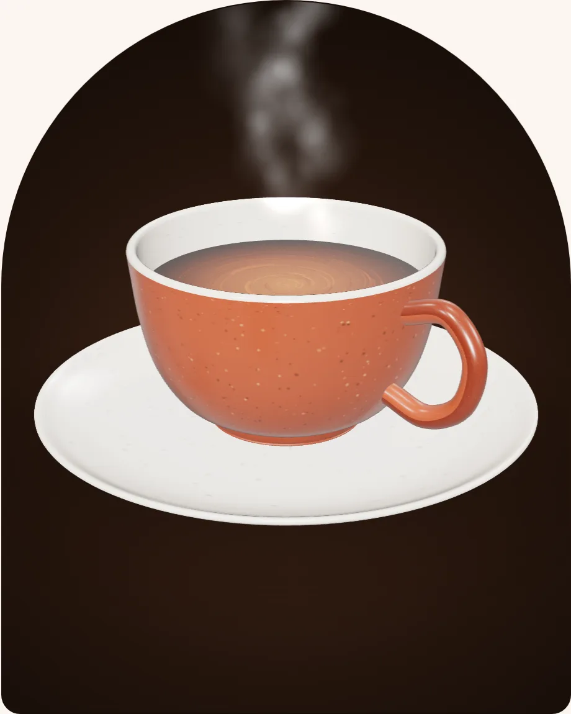
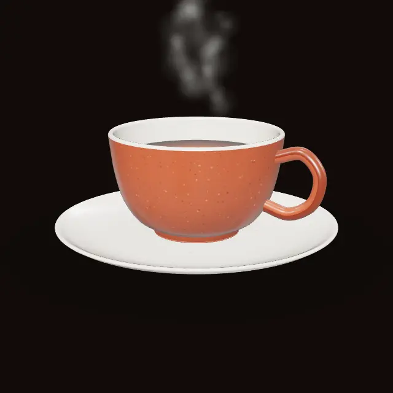

Torrefação e cafeteria · Centro
Café que espera o tempo certo.
Torramos em lotes de 5 kg, devagar, para cada grão chegar à xícara com o doce que a pressa queima.

- Lotes de 5 kg torrados toda terça
- Origem única cinco fazendas no balcão
- Moído na hora para cada xícara
A gente não tem pressa. Escolhemos cada lote na prova, torramos olhando o grão e só servimos depois que ele descansa. O resultado é um café que você bebe sem açúcar e lembra no fim da tarde.
Cinco origens, um balcão
O cardápio muda com a safra. Estes são os lotes desta estação.
- 011.250 m · natural · torra clara
Mantiqueira, MG
Mel, laranja e um final de chá preto. O nosso filtrado da manhã.
- 021.100 m · cereja descascado · média
Cerrado Mineiro
Chocolate ao leite e castanha. Feito para o espresso e o cappuccino.
- 031.300 m · fermentado · clara
Chapada Diamantina, BA
Frutas vermelhas e acidez viva. Peça no coado, sem pressa.
- 041.400 m · lavado · clara
Caparaó, ES
Floral, jasmim e limão-siciliano. O mais delicado da casa.
- 051.050 m · natural · média-escura
Sul de Minas
Caramelo e rapadura. Corpo denso, bom com leite vaporizado.
Do grão à xícara em sete dias.
- 7 dias do torrador ao balcão, nunca mais que isso
- 5 kg por lote, para torrar olhando cada grão
- 92 °C na água do coado, medida a cada preparo
Como torramos
Provar
Cada lote passa por prova às cegas antes de entrar na casa. Se não surpreende, não entra.
Torrar devagar
Curva longa e fogo baixo: o açúcar do grão carameliza em vez de queimar.
Descansar
Dois dias de repouso para o gás sair e o sabor assentar antes de moer.
Servir
Moído na hora, pesado na balança e preparado do jeito que cada origem pede.
O ritual do espresso
Trinta segundos que levaram sete dias.
Moer na hora
18 g de café, moagem fina, só quando o pedido chega. Café moído perde aroma em minutos.
Extrair
9 bar de pressão por cerca de 27 segundos, até 36 g na xícara. A balança decide, não o relógio.
Deixar o vapor baixar
Espere um minuto. Entre 60 e 65 °C, o doce e a acidez aparecem; quente demais, só se sente o amargo.
Olhar a crema
Cor de avelã, com rajadas mais escuras. É o sinal de grão fresco e torra no ponto.

Venha pela xícara.
Endereço
Rua das Acácias, 120 · Centro
Horário
Ter a sáb, 8h às 19h
Dom, 9h às 14h
Sábados às 10h, até 6 pessoas.